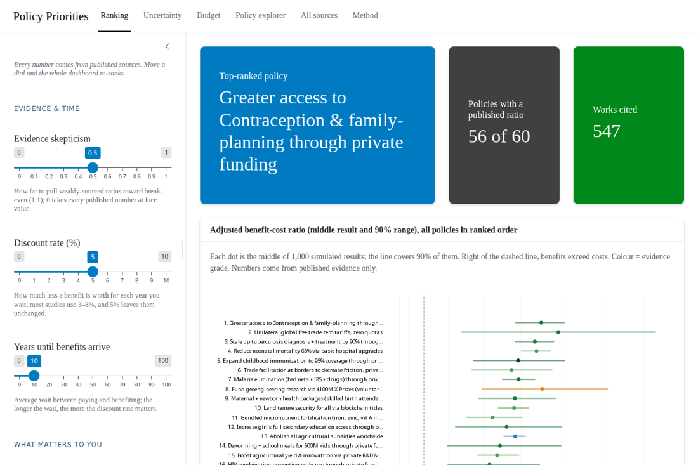

In the dashboard's final ranking order. The dashboard does the math; this is the why, three sentences each.
| Rank | Policy | Verdict | Why |
|---|---|---|---|
| 1 | Unilateral global free trade zero tariffs, zero quotas | Good | Trade is just people choosing to deal with each other, and every tariff is a government telling them they can't. The evidence is about as strong as economics gets: $90 to $2,800 back for every dollar of adjustment, with the poorest countries gaining the most. Hong Kong and Singapore opened up on their own, no reciprocity required, and got rich doing it. |
| 2 | Abolish all agricultural subsidies worldwide | Good | Farm subsidies tax everyone at the grocery store to pay a few producers, and rich-country handouts undercut farmers in the poorest countries. Removing them returns at least $50 for every dollar of adjustment. New Zealand scrapped its subsidies in 1984 and its farmers are doing just fine. |
| 3 | Trade facilitation at borders to decrease friction, private coalitions contribute to pay | Good | Every extra day a shipment sits at the border works like a 0.6 to 2.1% tariff. Cutting the paperwork costs a few million per country and returns $11 to $640 per dollar. This is the easiest win on the list. |
| 4 | Fund geoengineering research via $100M X-Prizes (voluntary) | Good | Research is not deployment, and knowing more beats knowing less. A $100 million prize pool is pocket change next to what governments spend on climate, and estimates put the return on research anywhere from $15 to $1,000 per dollar. If warming ever turns out worse than expected, we will want options that don't require shutting down the economy. |
| 5 | Greater access to Contraception & family-planning through private funding | Good | Giving women control over when they have children is one of the best investments anywhere, about $29 to $120 back per dollar. The global cost is small, around $3.6 billion a year, easily within reach of private donors. Healthier mothers, better-fed kids, and more women in school and at work. |
| 6 | Reduce neonatal mortality 65% via basic hospital upgrades | Good | Most newborn deaths in poor countries are preventable with basic hospital care we already know how to give. Upgrades return about $36 to $87 per dollar and could save over a million babies a year. This is human progress in its most literal form. |
| 7 | Scale up tuberculosis diagnosis + treatment by 90% through private funding | Good | Tuberculosis is curable, and it still kills over a million people a year. Scaling up diagnosis and treatment returns about $46 per dollar and could save close to a million lives annually at roughly $2,000 each. There are very few better places for a philanthropist to put money. |
| 8 | Repeal Jones Act allow LNG exports freely | Good | A 1920 law says ships moving goods between US ports must be American-built, -owned and -crewed, and it drives up prices on the coasts, in Hawaii and in Puerto Rico. Repeal gains up to $9.8 billion a year against modest one-time losses for about 10,800 workers. Protecting one industry at everyone else's expense isn't policy, it's a favor. |
| 9 | Malaria elimination (bed nets + IRS + drugs) through private funding | Good | Bed nets and cheap combination drugs return roughly $19 to $48 per dollar. About half the money needed is missing, so every extra dollar buys proven tools, not experiments. Malaria was wiped out in the US and southern Europe, and it can be wiped out everywhere. |
| 10 | Expand childhood immunization to 95% coverage through private funding | Good | Vaccines are one of the great victories of science over superstition. Every major study finds benefits many times the cost, from about $7.50 per dollar in the US to over $100 in poor countries. Getting coverage to 95% costs under a billion dollars a year. |
| 11 | Maternal + newborn health packages (skilled birth attendants) Through private funding | Good | Skilled birth attendants and emergency obstetric care turn childbirth from a gamble into a routine event. Returns run $9 to $87 per dollar, highest for a focused package of emergency care plus contraception. The money needed is modest and private funders can carry it. |
| 12 | Land tenure security for all via blockchain titles | Good | Property rights are the foundation of prosperity, and billions of people live on land they can't prove they own. Secure titles return $18 to $45 per dollar by letting families invest, borrow and work with confidence. A public, tamper-proof record makes those rights hard to steal. |
| 13 | Increase girls' full secondary education access through private funding | Good | A 15-year randomized trial in Ghana found that paying for poor girls' secondary school raised graduation, women's earnings and their children's survival. That's at least $4 back per dollar, more once the next generation is counted. An educated, independent mind is the best investment there is, and this one pays for itself. |
| 14 | Sunset all regulations every 10 years unless re-passed | Good | Rules pile up because nobody is ever forced to justify keeping them. A ten-year sunset makes every regulation earn its place again, and Texas's sunset process returns $17 per dollar. HHS's own 2021 sunset rule estimated benefits 8 to 100 times the cost. |
| 15 | Open source Social Media - Repeal Sec. 230 for publisher/carriers, Platforms 10M+ require open API's & community notes. | Close call | The goal is right: open competition, more speech, and community notes that work, accurate 97.5% of the time on vaccine claims. But forcing private platforms to open their code and run notes is the government dictating how a business operates, and the Section 230 change has no evidence behind it at all. Keep the open, voluntary parts and drop the mandates. |
| 16 | Deworming + school meals for 500M kids through private funding | Good | Deworming costs about 30 cents a child, and a 20-year follow-up in Kenya found real gains in adult earnings. The short-run evidence is debated and school meals cost far more, which is why the range is wide at $3 to $100 per dollar. Still a sound voluntary investment in the kids with the most to gain. |
| 17 | Boost agricultural yield & innovation via private R&D & X prize funding | Good | Agricultural research is one of the best-documented investments there is, returning $10 to $33 per dollar. The Green Revolution fed billions of people who were supposed to starve. Prizes and market commitments let private money chase the next one. |
| 18 | Total nuclear deregulation private insurance model | Good | Germany's nuclear shutdown cost 6 to 61 times more than it saved, mostly in air-pollution deaths from the coal that replaced it. US reactors got about nine times more expensive as rules piled on. Let private insurers price the real risk instead of a regulator rewarded for saying no. |
| 19 | Bundled micronutrient fortification (iron, zinc, vit A in staples) through private funding | Good | Adding iron, zinc and vitamin A to staple foods costs cents per person per year. The payoff is 6 to 36 times the cost, mostly in children who grow up sharper and more productive. It's cheap, it's proven, and food producers can do it themselves. |
| 20 | Privatize student-loan market no federal guarantees | Good | About 60 cents of every extra dollar of subsidized federal lending shows up as higher tuition. The colleges capture the money and the students carry the debt. Let lenders price risk by school and program, and the worthless degrees stop getting financed. |
| 21 | HIV combination prevention scale-up through private funding | Good | Targeted prevention, especially male circumcision in Southern Africa, is among the best health buys anywhere, returning up to $56 per dollar and saving on future treatment. Broader programs return less, closer to $3. Fund what works and measure it. |
| 22 | Deregulate healthcare & expand access to cheap surgery through private funding | Good | Basic surgery like cesareans, hernia repair and fracture care returns over $10 per dollar in poor countries. In the US, certificate-of-need laws make hospitals ask their competitors' permission to expand, and removing them improves access. Let providers compete and the price of care comes down. |
| 23 | Legalize competing private currencies with 100% reserve banking option (i.e. Gold/BTC standard) | Good | Money is a product, and a government monopoly on it has given us a century of inflation and bailouts. Let people choose gold, bitcoin or a fully reserved account that can't suffer a bank run, and bad money has to compete. Even cautious estimates put the return at $3.70 to $40 per dollar. |
| 24 | National zoning pre-emption i.e. ban local NIMBY laws | Good | Zoning is the government deciding what you may build on your own land. In tight metros the regulatory tax on new housing is 2 to 10 times any harm it prevents, and freeing just seven big cities would add trillions to the economy. Let people build and housing gets cheaper. |
| 25 | Replace all government R&D funding with X-Prize-style voluntary prizes (minimum 10:1 payout ratio) | Good | Pay for results, not proposals. Prizes and advance market commitments put money on the table for whoever actually solves the problem, and the pneumococcal vaccine commitment saved about 700,000 lives. It turns research from a grant-writing contest into a race, and races are what produce progress. |
| 26 | Replace FDA with reciprocal approval + liability | Good | When a drug is already approved in Europe, Japan or Canada, Americans shouldn't wait years for a second stamp. Studies find FDA delay costs 4 to 24 lives for every life its screening protects. Reciprocity plus honest liability gets medicine to patients faster. |
| 27 | Phase out fossil-fuel subsidies | Good | Subsidies make energy artificially cheap, so it gets overused, and most of the money goes to people who are already better off. Ending them returns about $8 to $15 per dollar. No industry belongs on the dole, fossil or green. |
| 28 | Abolish the Federal Reserve System entirely | Good | The Fed era has delivered far more inflation than the century before it and no better growth, and banking crises have been twice as frequent since 1973. Central planning of the price of money fails for the same reason central planning fails everywhere. Replace it with market money (#23). |
| 29 | Remove all renewable-energy subsidies, tax credits, mandates | Good | State renewable mandates cut CO2 at $130 to $460 a ton and raised power prices 11 to 17%, several times what a ton of CO2 is estimated to cost. If wind and solar are competitive, they don't need the help. If they aren't, we shouldn't force them on people. |
| 30 | Separation of State and Economics (constitutional amendment) | Good | The government's job is to protect our rights, not to plan our economy. Peer-reviewed growth models put the cost of accumulated federal regulation in the trillions of dollars a year, and the freest quarter of countries is about 7.6 times richer per person than the least free. A wall between state and economy, like the one between church and state, is the long-term fix. |
| 31 | Legalize Nuclear SMRs/micro-reactors on private land | Good | Nuclear is the cleanest, densest, most reliable energy humans have ever built, and the main thing holding it back is licensing. The NRC's own analysis finds its streamlined rules save $4 to $10 per dollar of cost. Let small reactors get built and most of the energy-versus-climate fight goes away. |
| 32 | Repeal all anti-dumping duties i.e. government fines for selling goods under market value | Good | Anti-dumping duties punish foreign companies for selling to us cheaply, which means they punish American buyers. Gains from repeal are 2 to 14 times the losses to protected firms. Low prices are a gift, not an attack. |
| 33 | Privatize all government land, parks, and natural resources | Good | Land managed to earn a return does better than land managed by politics: state trust lands earn $14.51 per dollar of cost while the Forest Service and BLM lose about $2 billion a year. Owners take care of what they own. Private stewardship beats bureaucratic neglect. |
| 34 | Open ANWR + all offshore leasing 100% private royalties | Good | Studies find opening ANWR and the closed offshore areas returns $2.30 to $3.90 per dollar after counting environmental costs. Cheap, reliable energy is what lifted humanity out of poverty, and it still is. Let private owners and royalties decide, not politics. |
| 35 | End export-controls on energy tech | Good | Selling what we produce to people who want to buy it is how wealth gets created. Freeing LNG exports alone returns $2.50 to $3.30 of GDP per dollar of higher energy cost. And allies buying American gas aren't buying it from Russia. |
| 36 | Legalize prediction markets | Good | Prices pool scattered knowledge better than experts do, and prediction markets have beaten polls at forecasting elections and business outcomes. Up to $6 back per dollar. Adults should be free to put money on what they think is true. |
| 37 | Privatize ports, airports, air-traffic control | Good | Canada privatized air traffic control and now runs it about a quarter cheaper while modernizing faster. A DOT study found a user-funded corporation would return $2.20 to $2.80 per dollar. Infrastructure that charges its users answers to them instead of to Congress. |
| 38 | Legalize CO₂ pipelines + EOR nationwide | Good | Turning a waste product into more oil from old wells is exactly the kind of win markets find when government gets out of the way. At scale CO2 recovery returns about $1.40 to $3.40 per dollar, and pipelines are cleaner and safer than moving the same fluids by rail. Clear the permitting roadblocks and let them be built with willing landowners. |
| 39 | Universal school-choice tax credits (Arizona ESA worldwide) | Good | Funding should follow the student, not the school system. DC's voucher program returned $2.62 per dollar, mostly through higher graduation rates, and existing programs save taxpayers $1.70 to $2.64 per dollar. Competition lifts the kids who stay in public schools too. |
| 40 | Abolish income tax entirely (16th Amendment repeal) | Good | The income tax treats what you earn as the government's to take. Each dollar it raises costs between 13 cents and $2 extra in lost work, saving and investment, plus filing costs. Fund a limited government without punishing productivity and the economy grows for everyone. |
| 41 | Reform Patents: 7-Year Term, No Extensions, Full Public Disclosure | Close call | Ideas are property, and the people who create them deserve protection. But outside drug development, patents now cost firms more in litigation than they earn, and strong patents can cut follow-on innovation by 20 to 50%. A shorter, cleaner term may serve inventors better, but at $0.90 to $4 per dollar it's a close call, and drugs should probably keep a longer term. |
| 42 | Repeal all capital-gains taxes on bitcoin, gold, silver, and any foreign currencies | Good | Taxing gains on gold, silver, bitcoin or foreign currency punishes people for protecting their savings from inflation the government created. It also turns every small purchase into a taxable event. Sound money shouldn't come with a tax form. |
| 43 | Repeal EPA CO₂ endangerment finding | Good | The endangerment finding turned CO2 into a pollutant and handed the EPA power over every car and power plant in the country. The EPA's own numbers show repeal avoids about $1.3 trillion in compliance costs. Climate policy belongs with elected legislators, not with an agency regulating by finding. |
| 44 | Abolish occupational licensing | Good | Licensing mostly protects incumbents from competition, not customers from harm. Consumers get about 80 cents of quality for every dollar of higher prices, and the cost falls hardest on low-income workers trying to get started. Private certification and reputation do the job better. |
| 45 | Repeal teacher-certification monopolies | Good | Decades of research find that certification barely predicts whether a teacher is any good. Florida's no-coursework route attracted the strongest candidates. Let schools hire for ability, not paperwork. |
| 46 | Legalize homeschooling globally | Good | Parents, not the state, are responsible for their children's education. Families who homeschool with a free public school down the street show it's worth at least what it costs them. Banning it, as some countries still do, is an insult to freedom. |
| 47 | End government degree accreditation | Good | Government accreditation works like a cartel that decides who gets access to federal aid. Opening aid to new providers pushes existing colleges to compete. Let employers and students judge quality. |
| 48 | Repeal Costly Sarbanes-Oxley 404 finance reporting for small companies | Good | Section 404 audits eat a large share of small public companies' revenue, and stock-market evidence finds the cost outweighed what investors gained. Other studies find exempt firms report less reliably, so the evidence is split, $0.54 to $1.85 per dollar. Let investors decide how much assurance they want to pay for. |
| 49 | Prohibit private banks from holding government debt as reserves | Bad | Banks loaded with government bonds tie their own survival to the government's finances, which deepened the euro crisis and helped sink Silicon Valley Bank. But a ban is still the government telling private banks what they may own, and the evidence is weak at $0.10 to $4.60. End the bailouts and the guarantees instead, and banks will manage that risk on their own. |
| 50 | Global carbon tax $135/tCO2 by 2030 (Paris) (revenue re-invested) | Bad | A $135-per-tonne global tax is a 1.5°C-strength price, and full-cost models find it costs more than the damage it avoids: 47 to 84 cents of benefit per dollar. It hits the poorest hardest, through energy and food prices. Prosperity, nuclear power and innovation cut emissions without making people poorer. |
| 51 | Ban all government funding of science/R&D (100% private only) | Close call | In principle, science should be paid for by the people and companies who choose to fund it, not by taxing everyone. But the evidence is against an overnight ban: civilian federal research returns well above its cost, and cutting it all at once destroys more value than it saves. Build the private alternatives first (#25 and #17), then pull government back. |
| 52 | Global plastic ban + single-use mandates | Bad | Canada's plastics ban returns about 31 cents per dollar and England's straw ban as little as 3 cents. Life-cycle studies find many of the substitutes have a bigger footprint than the plastic they replaced. Feel-good politics, real costs. |
| 53 | Green New Deal (US full implementation) | Bad | The Green New Deal bundles a crash energy transition with a long list of social spending, at $5 to $9 trillion a year. Even if it eliminated every tonne of US energy CO2, the climate benefit would be smaller than the energy bill. It's central planning dressed up as climate policy. |
| 54 | Limit domestic/international flights (aviation tax/cap) | Bad | The European Commission's own modelling finds aviation taxes cut EU aviation CO2 by only a few percent while costing about €9 billion a year in GDP, which works out to 2 to 11 cents of benefit per euro. Flight connects families, businesses and ideas. Rationing it is a step backward. |
| 55 | Ban ICE vehicles globally by 2030 | Bad | Forcing every new car to be electric by 2030 costs $2,700 to $4,700 per tonne of CO2 avoided, against a climate benefit of $36 to $185. Where the power comes from coal, it barely cuts emissions at all. If electric cars are better, people will buy them; mandates just make cars more expensive. |
| 56 | WEF 15-minute cities: Green New Deal + urban car ban, 1flight/3yrs, 3 pcs clothing/yr, no meat/dairy forced vegan | Bad | This package stacks the Green New Deal with car bans and personal caps on flights, clothing, meat and dairy. Taking meat off American tables alone would cost households about $1.8 trillion. It's a plan to make people poorer and less free on purpose. |
| 57 | Universal basic income global pilot | Bad | A basic income moves money around rather than creating it. A randomized US trial found every dollar paid out cut household earnings by at least 21 cents, and a global version would cost about a third of world GDP. It takes from the people who produce to pay people who no longer have to. |
| 58 | Digital ID mandate worldwide | Bad | When India made biometric ID compulsory for food rations, corruption didn't fall, costs rose about 8%, and hundreds of thousands of legitimate recipients lost their benefits. A mandatory ID built for tracking things like personal carbon allowances is a tool for watching citizens, not serving them. Privacy is a right, not a privilege. |
| 59 | Mandatory ESG reporting for all firms | Bad | Mandatory ESG reporting costs US listed companies about $6.4 billion a year extra, and the SEC admitted it couldn't quantify the benefits. Investors marked European firms down when the EU version hit. A company's job is to serve its owners and customers, not a political checklist. |
| 60 | Carbon credits/offsets mandate (net-zero compliance) | Bad | Fewer than 16% of carbon credits are real reductions. A net-zero mandate forces companies to buy paper instead of cutting anything. It's a compliance industry, not climate policy. |